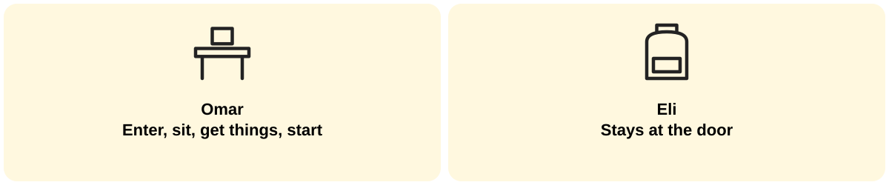

Week 10 · Wednesday October 7 · Welcome · 0:00
Rest well. Return strong.
Week 10 · Wednesday October 7 · Regulate · 2:00
Feet flat
Hands still
Breath out long
The reset you will use the first morning back.
Week 10 · Wednesday October 7 · Orient · 2:00
READY ROUTINE: Enter
Seat
Materials
Start in 60
Sustain.
READY GOAL: one thing you will get better at.
Week 10 · Wednesday October 7 · Connect · Look · 2:00

Omar walks in, sits, gets materials, and starts the Do Now.
Eli walks in, talks about his break at the door, and asks, "What are we doing?"
Question: What did Omar do that Eli did not? What can help Eli?
Week 10 · Wednesday October 7 · Connect · Share · 1:00
Week 10 · Wednesday October 7 · Practice · 3:00
READY GOAL: I want to get better at ____.
My first step: ____.
READY ROUTINE: First morning back, I will ____ (check the First Five).
READY BODY: If I feel tired or off, I will ____.
Breaks look different for every family. Plans and reflections stay private unless the student chooses to share.
Week 10 · Wednesday October 7 · Commit · 3:00
Today I will start working on my goal by ____.
Week 10 · Wednesday October 7 · Transition · 2:00
Before we move on: What will you do the first morning back?
Tomorrow: Friday Cypher, on Thursday!